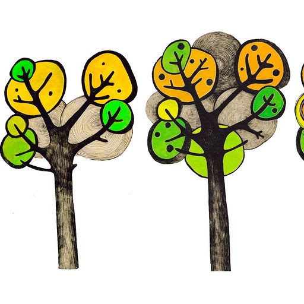
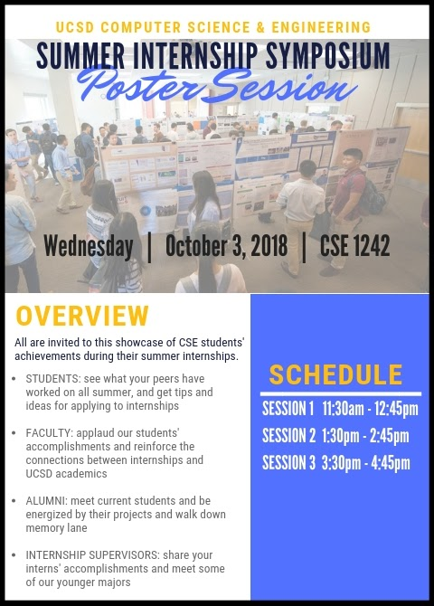

What is CSE 197?
CSE 197 helps students draw maximum benefit from their paid, full-time, on-company-site/hybrid/remote engineering internships. In these internships, students are mentored as they work in novel situations on real-world projects. CSE 197 helps students draw lasting practical, technical, and professional insights from these experiences, as well as opportunities to learn from the internship experiences of other CSE 197 students. Successful CSE 197 students earn 4 units of elective credit.
*The deadlines and application forms on this site are updated once each year, around week 5 of Spring quarter.*
APPLY TO CSE 197
What is CSE 191?
CSE 191 is a one-unit non-elective credit class for work done in conjunction with an internship. Each time students enroll in CSE191, they earn one unit of academic credit. Students may earn credit for CSE 191 at most three times.
APPLY TO CSE 191
What are the defining characteristics of an internship experience?
- Novelty
- Mentorship
For example, founding a company does not qualify as an internship because you are not being mentored. On the other hand, if you are hired to work as a summer intern in a startup where you will be mentored by an existing employee, that may be a summer internship.
Frequently Asked Questions
- What is the workload for CSE 197?
Through CSE197, you will identify and deepen the connections between your UC San Diego coursework and real world problems. You will also reflect on the growth of your professional, problem-solving, and technical skills over the internship. Your activities for CSE 197 will span the entire duration of your internship. It is not possible to join CSE 197 after your internship has already begun.
Throughout the internship, you will post on the Piazza discussion forum both reflections and comments. Each student is expected to post weekly reflections on the week as well as responses to specific questions I will pose that are intended to guide the discussion. Students will read and give feedback to group members. The goal is that sharing these experiences communally will enhance each of your internships.
Near the completion of your internship you will prepare a poster highlighting a key achievement of your internship (technical, educational, or professional). This poster will be presented at the Summer Internship Symposium in the Fall quarter. In case of excused extenuating circumstances, alternate work may be submitted in lieu of presenting in the Symposium.
- What is the workload for CSE 191?
- Once you are cleared to enroll in CSE 191, you will track your personal, professional, and technical growth throughout your internship experience. At the end of the internship, you will submit a reflection on the internship project, including background, key achievements, and connections to UC San Diego.
- Are students from majors not in CSE eligible to enroll in CSE 191 or CSE 197?
- At this time, enrollment is limited to CSE-department majors only. If your major is in another department, we encourage you to reach out to your departments' advising team for options of companion courses available to your internship. Courses that students in the past have chosen including MATH 197, COGS 197, ECE 197, and AIP 197. Computer Engineering students whose home department is ECE are not eligible for CSE 191 and CSE 197.
- Can I enroll in CSE 197 in the Fall Quarter and avoid paying Summer Session tuition for this class?
- For summer internships, unless you are an international student using CSE 197 for CPT requirements, you may enroll in CSE 197 either in the Summer or in the Fall. However, the reflection journal work for CSE 197 must be completed during your internship regardless of which quarter you enroll in.
- Can I wait to add CSE 197 to my Fall schedule until the start of the Fall quarter?
- Yes. If adding CSE 197 would cause you to exceed the allowed units for second-pass enrollment, you can delay adding the course until the start of the Fall quarter. However, it is your responsibility to add the course in a timely manner; I won't be sending out reminders. Moreover, you must complete CSE 197 work during your internship (i.e. over the summer), even if you wait to enroll in the course for the Fall.
- If my internship is in the Summer but I'm enrolling in CSE 197 for the following Fall quarter, when do I complete the CSE 197 assignments?
- The weekly reflections must coincide with the weeks of your internship. If your internship is in the summer, you complete these assignments in the summer.
- When are the due dates/ deadlines for assignments?
- Unless otherwise specified, the weekly reflections are intended to be timed with the weeks of your internship. If your internship starts, for example, on Monday the n'th of June, then your week 1 reflection would be due by the evening of Sunday June n+6. The exception to this is the Week 0 assignment, for which the due date is described on the assignment page.
- Do I need to submit a letter from my employer confirming the internship?
- Yes. When you submit your documents to EASy to be cleared to enrol in the class, you'll need to upload documentation from your internship employer confirming your start and end dates, the company name and location, and your job title or description.
- What if my internship starts at an unusual time?
- Work through the application checklist criteria and soon as possible to start your application for CSE 197 early. You'll be advised on when to start class activities and which quarters are available for enrollment in the course.
- How do I know if I'm on track for passing the course?
- The minimum passing requirements are describe on the class syllabus.
- How many times can I enroll in CSE 191?
- The university limits CSE 191 to a maximum of three times or 12 units (whichever comes first).
- How many times can I enroll in CSE 197?
- A maximum of four units of CSE 197 can be counted towards major requirements.
Links to Resources
- UC San Diego CSE department: https://cse.ucsd.edu/
- CSE Undergraduate Program FAQ: https://cse.ucsd.edu/undergraduate/prospective-students
- General page for CSE 191 classes: https://cse.ucsd.edu/undergraduate/cse-191-seminar-computer-science-and-engineering-0
- Jacobs School of Engineering: https://jacobsschool.ucsd.edu/
- EASy (use Request Type: Special Studies): https://academicaffairs.ucsd.edu/Modules/Students/PreAuth
- UC San Diego International Students & Programs Office: https://ispo.ucsd.edu/
- Faculty sponsor for CSE 191, CSE 197: Prof. Mia Minnes, CSE (EBU-3b) 4206, minnes@ucsd.edu
- Update contact email to @ucsd.edu
- Update application, pre-survey, company permission, group forms and links
- Add section for AY internships
- Update application google form and link to it
- Redirect Summer Internship Symposium page to new website
- Extended eligibility criteria exceptions to account for higher work from home prevalence, but require paid internships. Updates on homepage and application checklist and requirements page.
- Added instructions about Week 5 updates to website
- Added information about cap to number of times CSE 191 credit can be earned
- Updated links to application form, Piazza signup page, Pre-survey, Company Permission form, Group form, Special Summer Session last assignment deadline, Final document upload form
- Fix typo for number of parts in final assignment for students enrolled in Winter quarter
- Updated deadlines for final assignments
- Changed year in poster naming convention on Poster page to YEAR
- Extended eligibility criteria exceptions due to COVID-19 pandemic
- Updated links to application form, Piazza signup page, Pre-survey (TBA), Company Permission form, Group form, Final document upload form.
- Moved Week 3 identity prompt to Week 5.
- New Week 3 prompt: "Quick notes: Think back to your internship search process. What attributes of an internship or company were important to you? To what extent did you research the values and ethical stances of companies you considered? Reflection: What values are important for professionals in the tech industry to uphold? How do you translate your personal ethical values to your work?"
- Removed Week 6 Alternate Prompt: "Alternate prompt for reflection: read over your own and your group members' reflections from Week 3. In what ways has your internship impacted how you identify yourself? Specifically address questions raised by your group-mates following up on your post."
- Added link in Week 8 to remote learning post.
- Final prompt changed from "What are you most proud of in this internship" to "What was most meaningful to you in this internship?"
- Updated deadlines for final assignment.
- Summer Internship Symposium date updated to TBD
- Changed year in poster naming convention on Poster page to 2021
- Modified eligibility criteria in light of COVID-19 pandemic (in FAQ + in application page) and to reflect that CSE 197 may only be taken once.
- Updated links to application form, Piazza signup page, Pre-survey (survey also updated), Company Permission form, Group form.
- Remove Winter 2019 ref. to Paul Cao's CSE 191 section in CSE 191 application.
- Updated weekly deadline to indicate time zone: anywhere on Earth.
- Archived 2019 Symposium page, added placeholder for 2020 Symposium.
- Updated FAQ with "first wave" internship Week 0 deadline.
- Updated date of Symposium, due dates
- Updated links to forms
- Changed "Soft skills" to "Personal and Professional Growth"
- Added instructions at the top of week 8 and later posts redirecting to "Last week" post.
- Requirements: added paragraph: "Note: since you and your group members may have different internship start dates, you may be responding to different prompts each week. That's ok! Use the comments and followups to engage in discussions about your shared experiences."
- Summer 2021: Virtual Symposium
-
October 6, 2021. Session I: 2pm-3pm. Session II: 3:30pm-4:30pm
This showcase will highlight CSE students' achievements during their summer internships. Come to one or both sessions!
Join Zoom Meeting: https://ucsd.zoom.us/j/95064634811?pwd=aW4zVTFDTlhrdzVZM0RQM2xnaWRQdz09 Meeting ID: 950 6463 4811 Password: 935479 Find your local number: https://ucsd.zoom.us/u/adBmD0URf
All are invited to the Symposium, including CSE majors, alumni, faculty members, representatives from the Jacobs school, and industry professionals.
- Students: see what your peers have worked on all summer, and get tips and ideas for applying to internships;
- Faculty members: applaud our students' accomplishments and reinforce the connections between internships and UCSD academics;
- Alumni: meet current students and be energized by their projects and walk down memory lane;
- Internship supervisors: share your interns' accomplishments and meet some of our younger majors.
- Ethics and Society
- Impact described is positive, specific to the summer project or subfield in which you worked, and is significant.
- Student presenters Session I: Kunal Singla (Amazon), Darien Tsai (Edward Jones), Kevin Traw (Indeed), Dawson Do (Lytx), Alex Chow (GoSite), Shravan Konduru (Amazon), Bryce Tsuyuki (Amazon)
- Student presenters Session II: Brittany Trieu (Nanome), Anukul Vuppala (LiveRamp), Jeromey Klein (ServiceNow), Jaslina Kochhar (Apple), Alanna Merlan (IBM), Joona Kim (Amazon), Likith Palabindela (General Atomics), Joe Ikedo (Source Intelligence)
- Technical Skills
- Goal, technical challenges, and personal contributions clearly communicated.
- Student presenters Session I: Josh Narezo (Lytx), Ronak Vyas (Intuit), Judy Liu (Google), Eamon Aalipour (Humana), Will Duan (Blend Labs), Kris Schrieken (Amazon), Zubair Khan (Amazon), Laurent Lee (Amazon), Enoch Li (Amazon)
- Student presenters Session II: Tsun Wai Siu (Locbit), Anoushka Dave (Amazon), Nhi Nguyen (Uber), Guy Nir (Western Digital), Dennis Luc (Amazon), Derek Zhu (Zoom), Ishaan Gupta (Abterra Bio)
- Personal & Professional Growth
- Lessons learned are useful, actionable, and illustrated with specific personal experiences.
 - Student presenters Session I: Eswar Ramineni (ServiceNow), Tabassum Alam (Capital Group), Helen Chang (Salesforce), Ethan Tan (Atlassian), Nicholas Willison (General Atomics), Richie Appen (Amazon), Harshi Agrawal (Qualcomm), Rohan Bhushan (Amazon), Vicente Montoya (ServiceNow), Aryan Pareek (General Atomics), Nora Du (Salesforce), Peony Lum (Optum), Johnny Fu (Veritas Technologies), Maxwell Wong (Bank of America), Ahmed Hussaini (Western Digital), Steve Christensen (Amazon), Andy Liu (Amazon), Justin Du (ServiceNow)
- Student presenters Session II: Vishaal Ramaswamy Kasi Vasu (Intel), Jakob Getzel (Amazon), Evan Scales (Amazon), Che-Yu Hou (Ding Cheng Topten), Steven Steiner (ServiceNow), Erin Griggs (PennyMac), Jaime Izabal (Capital One), Aaron Chao (KPRS Construction Services), Dhanvi Desu (Amazon), Amit Bar (TikTok), Dillan Merchant (Cubic Corporation), Eric Xiao (Apple), Kevin Wong (SDG&E), Nick La Polla (MyCase), Irene Chiu (Google Taiwan), Alvin Wang (Google), Vicki Cai (Amazon), Frankie Rodriz (Bank of America), Dylan Ellsworth (General Atomics), Amy Li (Amazon), Uday Kalra (Google), Andrew Benser (Roku), Jesse Cox (Leidos), Viren Abhyankar (Verkada), Andrew Hu (Appriss), Vicki Chen (Intuit), Anurag Asthana (SupportLogic), José Santana Sosa (LPL Financial)
- Summer 2020: Virtual Symposium
- Student presenters Technical Skills: Jessica Lam, Ash Ghiassi, Nick Aguilar, Emily Ferguson, Erik Follette, Reshma Karthikeyan, Dhiva Krishnamoorthi Geetha, Mark Lee, Joseph Li, Chris Liu, Imran Matin, Daniela Molina, Calvin Nguy, Arsen Ohanyan, Andrew Pham, Aimee Shao, Prabh Singh, Kyle Stadelmann, Andrew Tang, Harry Tran, Sara Blumin
- Student presenters Personal and Professional Skills: Jeremiah Alindogan, Henry Chan, Phuc Dao, Joseph Doan, Gaurika Duvur, Agnes Garcia, Yohan Hezkiya, Kenneth Chen, Simon Liu, Cody Maheu, Alexandra Michael, Jennifer Pham, Chris Pham, Areg Stepanyan, Maria Tarakji, Vincent Tran, Alvin Wong, Aidan Denlinger, Alex Kim
- Student presenters Ethics and Society: Uposhanto Bhattacharya, Anshul Birla, Kenny Chen, Felix Chu, Yaman El-Jandali, Johnathan Huynh, Justin Nguyen, Anirudh Perubotla
- Summer 2019
-
Wednesday October 16, 2019
CSE 1242
Choose to attend any or all of the two poster sessions: Session 1 11:45am - 1pm; Session 2 3:45pm - 5pm
This showcase will highlight CSE students' achievements during their summer internships.
Important Dates
- Wednesday September 18: Poster submission deadline for students.
- Wednesday October 2: Industry mentor RSVP deadline for parking accommodations.
- Wednesday October 16: Summer Internship Symposium.
Student presenters Session 1 (11:45am-1pm): Mher Arabian PPG, Kenta Asai PPG, Mikhail Boulgakov TS, Devon (Dung) Do PPG, Juan Andres Espinoza Ulloa TS -- Winner, Ruohan Hu TS, Yusuf (Jishan) Khandoker TS -- Honorable mention, Rajat Komawar ES, Philip La ES, Aaron Lee PPG, Anson Lee PPG, Lee Liang TS,, Ethan Lowe ES -- Honorable mention, Alex Mao PPG -- Honorable mention, Kevin Nguyen PPG, Trevor Perez TS, Abigayle Quintana PPG, Nicky (Nikhil) Ranjan TS, Jess (Jessica) Redublo PPG, Oguz Sayim ES -- Winner, Alexander Schonken PPG, Nathanael See TS, Steven Siddall TS, Tiffany Streitenberger ES, Darya Verzhbinsky PPG -- Winner, Jocelyn Wei ES, Haimei Yang PPG, Yimeng Yang PPG
Student Presenters Session 2 (3:45pm-5pm): Benson Budiman PPG, Edward Chen PPG, Justin Chen PPG, Roger Cheng TS, Gary Chew PPG, Rachel (Yoo Jin) Chung TS, Josh (Joshua) Comes ES, Avi Cramer TS, Matthew Crooks ES -- Honorable mention, Cody Emrick TS, Amanuel Haile ES, Hannah Hsu PPG -- Honorable mention, Siddharth Jain PPG, Izza Khan PPG, Kalvin Lam ES, Jeffrey Lee PPG, Jessica Lin TS -- Winner, Kelvin (Kin Man) Lui ES, Padraig MacGabann ES, Sam (Samuel) Melero PPG, Maya Miller PPG, Ryan Murase PPG, Luke (Lucas) Nathan PPG, Angel Obie PPG, Patrick Paxson PPG, Sandra Pekelis TS, Jerry Qing PPG, Kavya Ramamoorthy PPG, Subhash Ramesh TS, James Riback ES -- Winner, Nina Rothenhaus PPG, Nevan Samadhana ES, Lavanya Satyan PPG, Caroline Sih PPG, Kevin Soloway TS, Sheen Spencer PPG, Chase Sriprajittichai TS -- Honorable mention, Chris Synnott PPG, Justin Tahara PPG, Peter Ton TS, Chester Vanhuang PPG, Krystopher Weeton TS, Keith Wong PPG, Will (William) Xu PPG, Jeffrey Yao PPG, Sarah Youn PPG -- Winner
- Summer 2018
-
Wednesday October 3, 2018
CSE 1242
Choose to attend any or all of the three poster sessions. Session 1 11:30am - 12:45pm Session 2 1:30pm - 2:45pm Session 3 3:30pm - 4:45pm
This showcase will highlight CSE students' achievements during their summer internships.
Important Dates
- Wednesday September 19: Poster submission deadline for students.
- Friday September 28: Industry mentor RSVP deadline for parking accommodations.
- Wednesday October 3: Summer Internship Symposium.
Student presenters Session 1 (11:30am-12:45pm): David Amadeo, Ryan Jeric Cajigal, Hee Ro Chung, Marlon Gamez, Christopher Guan, Philip Kim, Samuel Kirby, Veena Kumar, Wis Kojohnjaratkul, Jeffrey Lee, Sandy Li, Simon Li, Prithvi Narasimhan, Shane Nielsen, Sashaank (Sunny) Pasumarthi, Anooj Patel, Junnel Reboquio, Ramtin Roshanmanesh, Shiva Sharma, Kevin Pansawira, Griffin Stamp, Zhi Jia Teoh, Michael Aaron Tolentino, Stefanie Tonnu, Brandon Tran, Anthony Tseng, Annie Wai, Erick Wilson, Derrick Wong, Zichao (Charry) Wu, Kate Wong, Cassie Zhu
Session 2 (1:30pm-2:45pm): Tina Chen, Seth D'Agostino, Cody Doan, Shivani Doshi, Bhavna Gupta, Julia Kapich, Tianhui (Aviva) Hu, Taylor Lew, Solomon Liu, Timothy (Tim) Mak, Nishil Macwan, Darin Moore, Alexander Nguyen, Justin Oh, Amangeet (Geet) Samra, Michaella Sheng, Benjamin (Ben) Tang, Carl Tsai, Jiayin (Jenny) Wang, William Yu, Jiaxiao (Joe) Zhou
Session 3 (3:30pm-4:45pm): Bilguun Bulgan, Jason Bao, Tianhui (Scott) Cao, Wenyi Chen, Miranda Go, Joshua (Josh) Hsieh, Zachery (Zach) Johnson, Bella Le, Manik Narang, Dustin Pilkington, Elliot Pourmand, Thomas Qin, Simrandeep (Sim) Singh, Jeremy Siocon, Heejung (Emily) Son, Stanley Tan, Rebecca Tomlinson, Ganesh Valliappan, Kesong Xie
- Summer 2017
-
All are invited to the Symposium, including CSE majors, alumni, faculty members, representatives from the Jacobs school, and industry professionals.
- Students: see what your peers have worked on all summer, and get tips and ideas for applying to internships;
- Faculty members: applaud our students' accomplishments and reinforce the connections between internships and UCSD academics;
- Alumni: meet current students and be energized by their projects and walk down memory lane;
- Internship supervisors: share your interns' accomplishments and meet some of our younger majors.
Session 1 Presenters (9:30am-10:30am): Armin Ahmadi, Adilijiang Ainihaer, Triet Bach, Min Ho Bae, Lucas Blumhardt, Aymane Chafik, Anshul Chandan, Fu Yang Chin, William Chin, Tynan Dewes, Hannah Faulstick, Vinson Gong, Michael Harasti, Patrick Hayes, Kevin Hwang, Emily (Jee) Jung, Jessica Kwok, Jim Lee, Christina Mak, Nihar Mauskar, Antonio Melano Gonzales, David Moll, John Rodgers, David Shan, Harold Shen, Vansh Singh, Tee (Sothyrak) Srey, Carmen Tin, Matthew Walker, Melissa Wright, Bowen Yang, Rafael Yitzhakian, Steven Zheng
Session 2 Presenters (11am-12pm): Tejas Badadare, Alexander Barcenas, Nick Basiago, Jerry Chen, Christian Cheng, Vanessa Chou, Gongyu Fu, Jorge Gomez, Brandon Green, Chang Gwoun, Victor He, Devin Hickey, Suli Huang, Edward Ji, Arvind Kalathil, Justin (Tai Ho) Kim, Kevin Klein, Sri Kodigala, Abhishek Kumar, Kevin Kuo, Byunggwan Lim, Eric Lin, David (Dexi) Lu, Robert Lu, Tyler Ly, Rochelle Anne Manongdo, Pyae Maung, Promita Nandy, Tina Nguyen, Seung Yoon Oh, Mauricio Panelo, Peter Panourgias, Cody Pham, Vivian Pham, Ajeya Rengarajan, Rahul Sabnis. Vaibhav Shah, Nicholas Wong, Xinyu Wu, Aaron Yang, Chen Yang, David Zech
Session 3 Presenters (1pm-2pm): Khaled Ahmad, Ashtiani Ali, Oscar Bao, Andrew Chan, Danny Chan, Matthew Chinn, Vinh Doan, Taylor Durrer, Trenten Eldred, Tejas Gopal, Sahib Grover, Alexander Hermstad, Richard Huang, Rui Jiang, Matthew Juandy, Akanksha Kevalramani, Momin Khan, Julian Joshua Komala, Joshua Kwa, David Le, Sherman Lee, Paolo Martinez, Saul Mendez, Archit Mishra, Yasmine Nassar, Sang Park, Giancarlo Perrone, Leo (Tianhao) Qiu, Aamir Rasheed, Parth Shah, Alex Spindler, Rudr Tandon, Todd Tang, Aaron Taylor, Aaron Tom, Desmond Toor, Do Trung, Dylan Uys. Colin Van Winkle, Michael Youssef, Hans Yuan
Session 4 Presenters (4pm-5pm): Amir Assadollahzadeh, Arash Azizi, Vincent Bai, Tal Ben-Ari, Luis Calona, Eason Chan, Joseph Chen, Zhibo Chen, Zhuo Chen, Jeremy Cruz, Jacob Davis, Rishi Dhanaraj, Natalie Duong, Tiffany Huang, Brandon Huang, Cy Hynes, Gauri Iyer, Hon Lao, Noel Lin, Kevin Liu, Bocun Liu, Luis Llobrera. Rishabh Malhotra, Magdalena Ninette. Aparna Rangamani, Richard San Miguel, Kyle Shankwiler, Abhisek Singh, Kenneth Siu, Joseph Thomas, Alan Thomas, Joshua van Gogh, Emily Wu
- Summer 2016
- http://cseweb.ucsd.edu/classes/internshipcourses/CSE197SU16.html
- Summer 2015
- http://cseweb.ucsd.edu/classes/internshipcourses/CSE197weekly_postsSU15.html
- Fall 2014
- http://cseweb.ucsd.edu/classes/internshipcourses/CSE197FA14.html
- Summer 2014
- http://cseweb.ucsd.edu/classes/internshipcourses/CSE197SU14.html